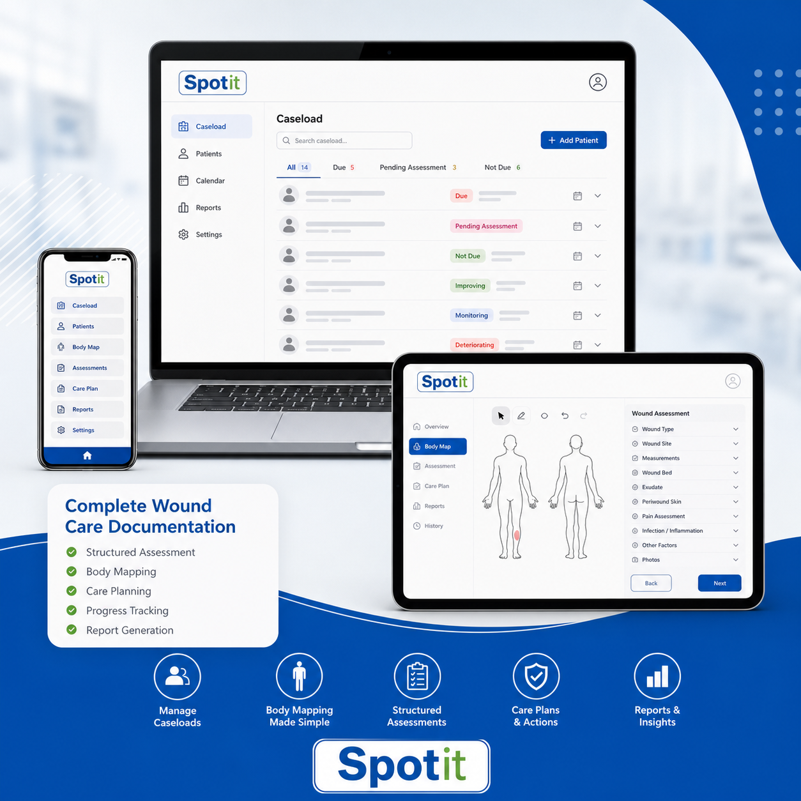

Spotit
An early-stage wound-care documentation concept for clearer wound capture, assessment, dressing records, and summaries.
Concept demo only. Not yet for live patient data, diagnosis, or treatment decisions.

Built Around Clinical Flow
Caseload
Patient details
Wound site and photo
Assessment and care plan
Summary and report draft
Seeking Feedback
Spotit is being shaped with input from clinicians, nurses, care providers, and potential pilot partners.
Pilot use would require secure hosting, clinical governance, consent process, and data protection review.